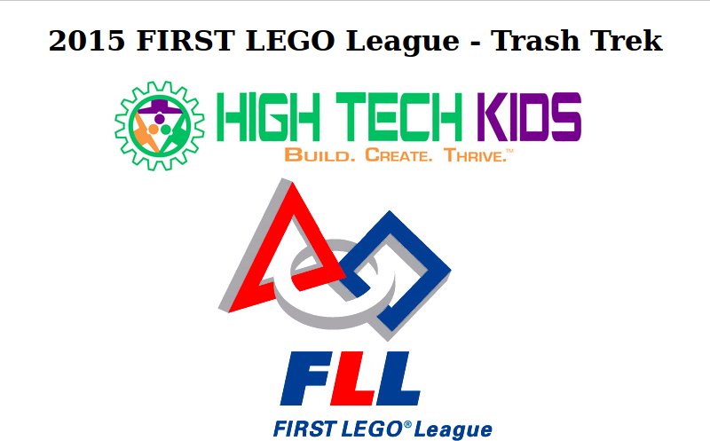
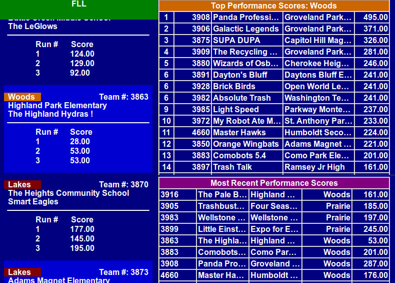

FLL-SW
FIRST Lego League scoring software
- Download the latest version of FLL-SW
- View FLL-SW On GitHub (Developers only)
This project is maintained by Jon Schewe
Displays
Here are some screen shots of the displays that are used in the software. This will give you an idea of what the audience sees during the tournament.
This is the welcome page. One can specify change out the logos and add sponsors to this page fairly easily. 
Here is the score board. This is what is displayed during most of the tournament. Any sponsor logos that have been configured are displayed in between the team names on the left side. The left side scrolls automatically to show all team's scores. The top right cycles through the top scores in each award group. The bottom right shows the most recent scores entered. 
This is the playoff bracket. It scrolls up and down show that all
matches are visible. Any sponsor logos that have been configured
will cycle through in the bottom frame.